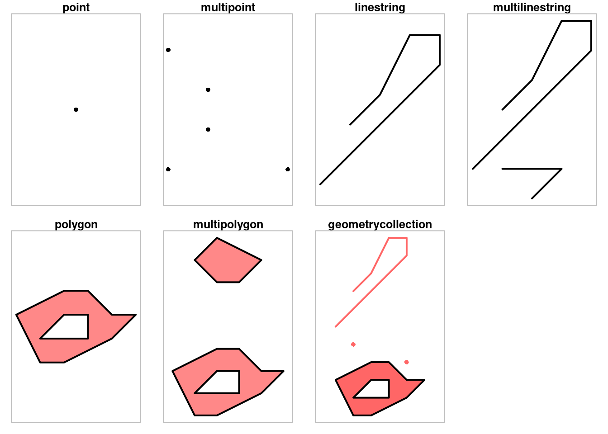
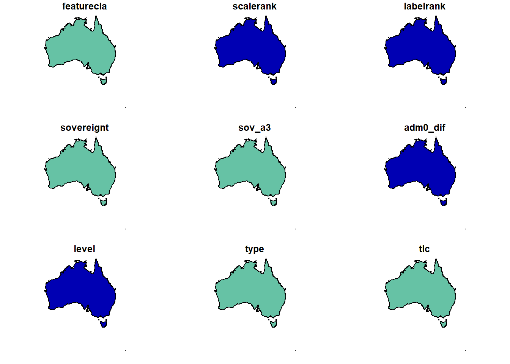
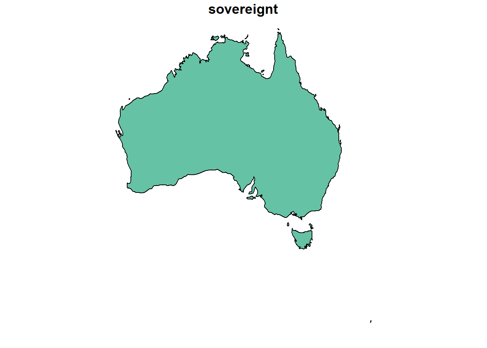
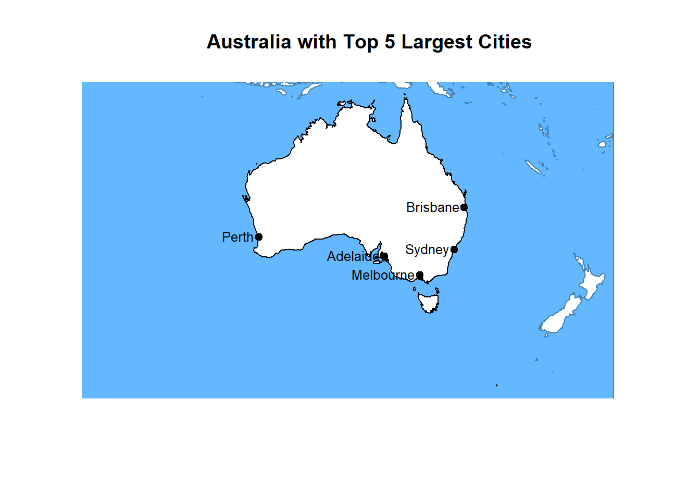

library(sf)
library(dplyr)
library(rnaturalearth)
library(stars)
library(geodata)
library(ggplot2)
library(ggspatial)Spatial Data and Mapping in R
Talk Description
Do you have an urge to know where? Discover how to bring your data to life through mapping! This talk introduces the basics of spatial data and how to create stunning maps in R. Using the beloved ggplot2, tmap, and the powerful sf package, we’ll explore visualizing vector and raster data, creating thematic maps, and customizing them. Whether you’re new to spatial data or looking to enhance your data visualization skills, this session will guide you through the essentials of mapping in R.
Speaker: Maryna Shedzko
Maryna is a Research Software Engineer with a background in GIS and Biogeography. During her studies, she specialized in disease distribution, particularly using R for modelling and spatial analysis.
Introduction
Welcome to Spatial Data and Mapping in R! In this talk, we will focus on building maps using ggplot2, one of R’s most popular libraries for data visualization. If you’re already familiar with creating graphs using ggplot, you’ll find making maps a natural extension of those skills.
We will also introduce sf (simple features), a package designed to work with spatial data in R. The combination of ggplot2 and sf makes it possible to create beautiful, customizable maps with relatively little effort.
Spatial Data
Before we talk about mapping, we have to talk about spatial data.
Spatial data refers to information about spatial objects and their relationships. A spatial object is defined as a digital representation of a real or abstract object from the physical or virtual world, including its identifier, coordinates, and attribute data.
Simply put, spatial data consists of information about geographical features or phenomena, capturing their location and/or distribution within a coordinate system tied to the Earth or any other celestial body. What sets spatial data apart from non-spatial data is the use of coordinates to describe location.
The vector model describes spatial objects using coordinates and, optionally, the topological relationships between them. Vector data captures the location and shape of objects as geometric primitives such as points, lines, polygons, and volumes. The choice of how to model an object (e.g., whether to represent a city as a point or a polygon) depends on the analysis scale and research objectives. The vector model is object-oriented.
The raster model, on the other hand, doesn’t focus on objects but rather on the spatial distribution of a particular characteristic, chosen by the researcher.It divides space into a uniform grid of cells, each storing a value for the studied parameter (determined through averaging, center-point sampling, etc.). Raster data can be numerical, such as temperature measurements, or categorical, like a classified image where each cell corresponds to a specific category. Thus, the raster model is more focused on the space or phenomenon itself.
While there are other models of spatial data, we won’t be covering them today.
Today, we will focus on how to read and visualize spatial data in both vector and raster formats, and we’ll also discuss issues related to the use of cartographic projections.
Vector Data
Simple Features (officially known as Simple Features Access) is a standard defined by the Open Geospatial Consortium (OGC) in document OGC 06-103, which is also recognized as the international standard ISO 19125. This standard outlines a common model for storing and accessing vector objects (such as points, lines, polygons, multi-points, multi-lines, etc.) in Geographic Information Systems (GIS).
The Simple Features standard includes 17 types of geometries in total. The most commonly used ones are the following seven:

For geographic coordinates (latitude and longitude), X corresponds to longitude, and Y corresponds to latitude.
Formats
Traditionally, in all GIS applications and spatial data databases, a large number of spatial objects are represented as an attribute table, where each row corresponds to an object and each column represents an attribute of that object. Each row in the table should be associated with information about the geometry of the object. Depending on the data format, this information can either be stored directly in the table (in a special column) or be placed in a separate data structure, which is linked to the attribute table via a key.
In R, the first approach is used by the sf package, where geometry information is stored in a special column of the table. Each cell in this column represents a Simple Features geometry object. The geometric objects are represented using standard structures such as lists, matrices, and vectors. These data structures store the coordinates of the objects in an ordered manner and naturally align with the data organization defined by the Simple Features standard. Since the geometry column doesn’t store regular variables but rather data structures, it is implemented as a list-column, with each element corresponding to a separate object.
to read the data we need to use the function st_read
# Read a geopackage
gpkg_path <- file.path(getwd(), "data", "countries", "countries_geopackage.gpkg")
gpkg_data <- st_read(gpkg_path)Reading layer `countries_shapefile' from data source
`C:\RIT\RMaps\r-spatial-data-and-mapping\data\countries\countries_geopackage.gpkg'
using driver `GPKG'
Simple feature collection with 242 features and 168 fields
Geometry type: MULTIPOLYGON
Dimension: XY
Bounding box: xmin: -180 ymin: -89.99893 xmax: 180 ymax: 83.59961
Geodetic CRS: WGS 84Spatial objects in R are represented through a hierarchy of three object classes:
sf(simple features): A data.frame object representing a collection of spatial objects with a list-column to store geometry.sfc(simple features geometry column): The list-column in an sf object that represents a collection of geometries for spatial objects.sfg(simple feature geometry): The geometry of a spatial object within the sfc list. With these specifications in mind, spatial objects are handled accordingly.
The fact that Simple Features objects are implemented as regular data frames means that any operation applicable to a data frame can also be applied to sf objects. This is a crucial feature of sf objects, which was greatly missed in the ecosystem of the older sp package.
Lets have a look at the first five rows of the last 5 columns of the table
head(gpkg_data[tail(colnames(gpkg_data))])Simple feature collection with 6 features and 5 fields
Geometry type: MULTIPOLYGON
Dimension: XY
Bounding box: xmin: -73.36621 ymin: -22.40205 xmax: 109.4449 ymax: 41.9062
Geodetic CRS: WGS 84
fclass_it fclass_nl fclass_se fclass_bd fclass_ua
1 <NA> <NA> <NA> <NA> <NA>
2 <NA> <NA> <NA> <NA> <NA>
3 <NA> <NA> <NA> <NA> <NA>
4 <NA> <NA> <NA> <NA> <NA>
5 <NA> <NA> <NA> <NA> <NA>
6 <NA> <NA> <NA> <NA> <NA>
geom
1 MULTIPOLYGON (((31.28789 -2...
2 MULTIPOLYGON (((30.39609 -1...
3 MULTIPOLYGON (((53.08564 16...
4 MULTIPOLYGON (((104.064 10....
5 MULTIPOLYGON (((-60.82119 9...
6 MULTIPOLYGON (((12.43916 41...The geometry is stored in a special column called geometry within the sf object. We can extract the geometry from this column using the st_geometry() function.
# Extract geometry column
geom_data <- st_geometry(gpkg_data)
# Print the class of the extracted object
class(geom_data)[1] "sfc_MULTIPOLYGON" "sfc" The extracted object will have the class sfc (Simple Features Geometry Column). This means it is a list of geometries, separate from the attribute data but still linked to the original spatial features.
Using st_geometry(), we can manipulate geometries separately from attribute data, allowing for operations such as transformations, projections, and spatial intersections while keeping attributes intact.
Note: It is worth mentioning that the
terrapackage also has support for vector data through itsSpatVectorobjects. Unlikesf, which stores geometry information within a special column in the attribute table,terraplaces geometry information in a separate data structure. This makes it a strong alternative for certain use cases, particularly becauseterraalso handles raster datasets. However, we are focusing onsfin this talk because it offers a more data-frame-like approach. This can be more intuitive for GIS users, as it resembles traditional attribute tables, and for non-GIS users already familiar withdata.framestructures in R. Additionally,sfintegrates seamlessly with the `tidyverse ecosystem, making it easier for those who usedplyr,ggplot2, and othertidyversetools
Creating Spatial Objects
You can create your own spatial objects using the sf package. Depending on the type of geometry you want to create, the function you use will accept different input formats:
- Points: Use a coordinate vector.
- Multipoints or Linestrings: Use a coordinate matrix.
- Other Geometries (e.g., polygons): Use lists of coordinates.
# Create a Point (Single coordinate)
point <- st_sfc(st_point(c(1, 2)))# Create a LineString (Matrix of coordinates)
ln <- st_sfc(st_linestring(matrix(c(1, 2, 3, 4), ncol = 2)))coords <- matrix(c(
0, 0,
1, 0,
1, 1,
0, 1,
0, 0
), ncol = 2, byrow = TRUE)
pol <- st_polygon(list(coords)) # Simple polygon
plot(pol)polPOLYGON ((0 0, 1 0, 1 1, 0 1, 0 0))Changing Geometry Types
The sf package allows you to convert between different types of geometries using the st_cast function. For example, you might want to convert a polygon into a line, or vice versa. Here’s how you would do it:
# Convert a polygon into a Line
line_converted <- st_cast(pol, "LINESTRING")
print(line_converted)
plot(line_converted)
Doesn’t look any different at first glance, but if we examine, we will notice that this object is now a linestring
line_convertedLINESTRING (0 0, 1 0, 1 1, 0 1, 0 0)Basic Visualization
When using the plot() function on a spatial object (like an sf object), it will generate thematic maps for the first 9 attributes by default.
# Get Natural Earth countries data
countries <- ne_countries(scale = "medium", returnclass = "sf")
plot(countries)To focus on a specific attribute, you can select it explicitly, as shown below:
# Get Natural Earth countries data
plot(countries['name'], key.pos = NULL)If you want to visualize a specific country, like the Australia, you can filter the data and plot it separately:
aus_sf <- countries |> filter(name == "Australia")
plot(aus_sf)
Note: In the example above, the base R pipe operator (
|>) is used to pass the data from one function to the next. It simplifies the workflow by eliminating the need for nested function calls. The expressioncountries |> filter(name == "Australia")filters the dataset for the Australia, and the filtered result is immediately passed to theplot()function for visualization.
For a more focused plot, select a particular attribute of the UK:
aus_sf <- countries |> filter(name == "Australia")
plot(aus_sf["sovereignt"])
You can also filter countries by population. For example, to plot countries with a population greater than 50 million:
# Plotting Countries with Population Greater Than 50 Million
outlines <- st_geometry(countries)
high_pop_sf <- countries |> filter(pop_est > 50000000)
plot(outlines, col = 'lightgrey')
plot(high_pop_sf$geometry, col = 'blue', add = TRUE)You can add extra features to your plot, such as a graticule (grid lines) and axes:
plot(countries["pop_est"], graticule = TRUE, axes = TRUE)You can combine different layers to enhance your visualization. For example, here’s how to add oceans and populated places to the Australia map:
# Download more Natural Earth data
oceans <- ne_download(scale = "medium", type = "ocean", category = "physical", returnclass = "sf")Reading layer `ne_50m_ocean' from data source
`C:\Users\n46797ms\AppData\Local\Temp\RtmpaABuKG\ne_50m_ocean.shp'
using driver `ESRI Shapefile'
Simple feature collection with 1 feature and 3 fields
Geometry type: MULTIPOLYGON
Dimension: XY
Bounding box: xmin: -180 ymin: -85.19219 xmax: 180 ymax: 90
Geodetic CRS: WGS 84cities <- ne_download(scale = "medium", type = "populated_places_simple", returnclass = "sf")Reading layer `ne_50m_populated_places_simple' from data source
`C:\Users\n46797ms\AppData\Local\Temp\RtmpaABuKG\ne_50m_populated_places_simple.shp'
using driver `ESRI Shapefile'
Simple feature collection with 1251 features and 31 fields
Geometry type: POINT
Dimension: XY
Bounding box: xmin: -175.2206 ymin: -90 xmax: 179.2166 ymax: 78.22097
Geodetic CRS: WGS 84# Filter for UK cities and select the top 10 by population
aus_cities <- cities |>
filter(sov0name == "Australia") |>
arrange(desc(pop_max)) |>
slice_head(n = 5)
# Plot the map
plot(st_geometry(aus_sf), lwd = 0.5, border = 'gray', main = "Australia with Top 5 Largest Cities")
plot(st_geometry(oceans), col = 'steelblue1', border = 'steelblue', add = TRUE)
plot(st_geometry(aus_sf), border = "black", lwd = 1, col = NA, add = TRUE)
plot(st_geometry(aus_cities), col = 'black', pch = 19, cex = 1, add = TRUE)
# Add city labels
text(aus_cities$longitude, aus_cities$latitude,
labels = aus_cities$name, cex = 0.8, pos = 2, offset = 0.25)
Raster data
A raster is a type of spatial data that represents information in a grid format, consisting of cells (or pixels), each with a value that represents some measurement or attribute for that location. This grid-based format is commonly used for representing continuous data such as elevation, temperature, land cover, or satellite imagery.

Unlike vector data, which requires specifying coordinates for each vertex, the regular grid structure of raster data allows the coordinates of the pixels to be calculated based on their indices. Therefore, raster data is essentially stored as a linearly ordered list of raster values and a description of the raster’s spatial information.
Raster spatial information
The spatial information of a raster refers to the location of its pixels and can be described by the following components:
| Parameter | Purpose |
|---|---|
| NCOLS | Number of columns |
| NROWS | Number of rows |
| XLLCENTER | Coordinates of the center of the lower-left pixel |
| YLLCENTER | Coordinates of the center of the lower-left pixel |
| CELLSIZE | Size of each pixel |
There are two packages that are widely used to work with raster data: stars and terra. Terra evolved from raster package, which used to be a primary tool for working with raster data. stars on the other hand, was developed to support multidimensional data and provide close integration with sf.
Note: In this talk, we will be using the
starspackage because it is compatible withsf, making it easier to work seamlessly with both vector and raster data. However,terrais a powerful alternative for raster data analysis and is particularly well-suited for large datasets and advanced geospatial operations.
Another package worth mentioning is geodata, which used to be part of the raster package but became its own independent package. This package allows you to easily access various global environmental data, such as climate, elevation, and land cover datasets, and import them directly into R. It provides convenient functions for fetching these datasets without the need to manually download and preprocess them.
Let’s start by importing some raster data and visualizing it. For this example, we’ll use elevation data.
library(stars)
elevation_st <- read_stars("data/elevation/gebco_small.tif")
plot(elevation_st)This basic plot gives us a look at the elevation data. But we can customize how the data looks by changing color schemes, breaking the values into bins, or cutting out specific areas.
Customizing the Color Palette
You can create custom color palettes by defining breakpoints and selecting colors. Here’s how we can create a palette for elevation data:
brks <- c(-12000, -5000, -2500, -1000, -200, 0, 200, 500, 1000, 2000, 4000, 8000)
clrs <- c(
"steelblue4",
"steelblue3",
"steelblue2",
"steelblue1",
"lightskyblue1",
"darkseagreen",
"lightgoldenrod1",
"darkgoldenrod1",
"darkorange",
"coral2",
"firebrick3")
plot(elevation_st, breaks = brks, col = clrs)Alternatively, you can use existing color palettes, like rainbow (there are many to choose from!)
plot(elevation_st, col = rainbow(10))Cropping the Raster
Sometimes, you may want to focus on a specific area within your raster data. You can crop the raster using a polygon, such as focusing on a specific country. In this case, we’ll focus on Australia, and we’ll use the terrain.colors palette to visualize the elevation data.
# Filter for Australia from the countries dataset
australia <- countries |> filter(name == "Australia") |> st_as_sf()
# Crop the elevation data for Australia
elev_country <- elevation_st[australia]
# Plot the cropped elevation data with the terrain.colors palette
plot(elev_country, col = terrain.colors(6))Adding Raster Data as a Layer to a Map
You can also overlay raster data onto vector data in a map. Let’s use the map of Australia with top cities, and add the cropped elevation data as a layer.
# Filter for Australia and top 5 cities by population
aus_cities <- cities |>
filter(sov0name == "Australia") |>
arrange(desc(pop_max)) |>
slice_head(n = 5)
# Plot the map
plot(australia$geometry, lwd = 0.5, border = 'gray', main = "Australia with Top 5 Largest Cities") # Custom title
plot(oceans, col = 'steelblue1', border = 'steelblue', add = TRUE)
plot(australia$geometry, border = "black", lwd = 1, col = NA, add = TRUE)
# Add the elevation raster data
plot(elev_country, col = terrain.colors(6), add = TRUE, main = NULL)
# Plot cities
plot(aus_cities, col = 'black', pch = 19, cex = 1, add = TRUE)
# Add city labels
text(aus_cities$longitude, aus_cities$latitude,
labels = aus_cities$name, cex = 0.8, pos = 2, offset = 0.25)
# Add grid for visual aid
grid()
This creates a map of Australia with top cities overlaid, and it includes the cropped elevation data as an additional layer. It does not look particularly pretty, but this is something you can do in base R!
How to make pretty maps with ggplot2
In previous section we explored that capabilities of base R t visualize raster and vector data. In this section we are going to look at ggplot2, as it offers a more flexible and aesthetically pleasing approach.
Creating a Basic Map
While ggplot2 syntax can seem a bit more complicated compared to base R plots, it’s very similar to creating regular plots. Essentially, ggplot2 allows you to layer different elements onto your plot, making it highly flexible and powerful for both simple and complex visualizations.
When working with maps, we treat the spatial data as a special type of dataset. A key difference with regular graphs is that spatial data usually comes in the form of vector data (like points, lines, or polygons) or raster data (like grids of values). But we use the same ggplot2 syntax for both!
Just like when creating regular graphs, we need to specify the geom to determine how our data will be represented visually.
For example:
- In regular graphs, when plotting points, we use
geom_point(). - For spatial data, the equivalent for vector data (like countries or polygons) is
geom_sf(). - For raster data (like elevation or temperature grids), we use
geom_stars(). Here’s an example comparing a scatter plot (a regular graph) and a map (spatial data) using ggplot2:
# Example of a simple scatter plot
ggplot(data = mtcars, aes(x = wt, y = mpg)) + # Dataset and aesthetic mapping
geom_point() + # Plot the points
labs(
title = "Car Weight vs. Miles Per Gallon", # Add a title
caption = "Data Source: mtcars" # Add a caption
) +
theme_minimal() # Use the same minimal theme# Load Natural Earth countries dataset
countries <- ne_countries(scale = "medium", returnclass = "sf")
# Create a simple map using ggplot
ggplot(data = countries) +
geom_sf() +
labs(
title = "World Map",
caption = "Data Source: Natural Earth"
) +
theme_minimal()So, if you’ve used ggplot2 before, it should be straightforward to apply the same principles to create maps!
Customizing your map
Example: World Map by Population
Just like regular graphs, you can also customize the map in many ways. For instance, in the next example, we’ll color the countries based on their population class.
countries$pop_class <- cut(countries$pop_est,
breaks = c(0, 1e6, 10e6, 50e6, 200e6, 1e9, Inf),
labels = c("<1M", "1-10M", "10-50M", "50-200M", "200M-1B", ">1B"),
include.lowest = TRUE)
ggplot(data = countries) +
geom_sf(aes(fill = pop_class), color = NA) +
scale_fill_manual(values = c(
"<1M" = "#ffffff", # White
"1-10M" = "#fee5d9",
"10-50M" = "#fcae91",
"50-200M" = "#fb6a4a",
"200M-1B" = "#de2d26",
">1B" = "#a50f15" # Dark Red
)) +
labs(
title = "World Map by Population",
fill = "Population Class",
caption = "Data Source: Natural Earth"
) +
coord_sf(expand = FALSE) aes(fill = pop_class)maps the population class to colors.geom_sf()is still used to plot the geometry (countries), but we added color based on population classes.scale_fill_manual()customizes the color palette for the population categories.
Example: Elevation Map
Next, let’s visualize elevation data by creating a map using raster data. In this case, we’ll color the elevation based on binned categories.
# Define the breaks and colors
brks <- c(-12000, -5000, -2500, -1000, -200, 0, 200, 500, 1000, 2000, 4000, 8000)
clrs <- c(
"steelblue4", "steelblue3", "steelblue2", "steelblue1", "lightskyblue1",
"darkseagreen", "lightgoldenrod1", "darkgoldenrod1", "darkorange",
"coral2", "firebrick3"
)
# Cut the elevation data into bins based on the breaks
elevation_st$elevation_binned <- cut(
elevation_st[[1]],
breaks = brks,
include.lowest = TRUE
)
# Create the plot
ggplot() +
# Elevation raster data
geom_stars(data = elevation_st, aes(fill = elevation_binned)) +
scale_fill_manual(
values = clrs,
name = "Elevation (m)",
labels = c(
" < -5000",
"-5000 - -2500",
"-2500 - -1000",
"-1000-200",
"-200-0",
"0 - 200",
"200 - 500",
"500-1000",
"1000 - 2000",
"2000 - 4000",
"> 4000"
)
) +
labs(
title = "Elevation Map",
caption = "Data Source: Natural Earth"
) +
# North arrow at top left
coord_sf(expand = FALSE) + # Keep lat/lon ticks
theme_minimal(base_size = 14) + # Minimal theme with a clean design
theme(
legend.title = element_text(size = 12),
legend.text = element_text(size = 10),
axis.title = element_blank(),
axis.text = element_blank(),
plot.title = element_text(size = 16, face = "bold", hjust = 0.5),
plot.subtitle = element_text(size = 12, hjust = 0.5),
plot.caption = element_text(size = 10, hjust = 1)
)geom_stars()is used to plot raster data (elevation) where the fill color is based on the binned categories of elevation.scale_fill_manual()assigns specific colors to each elevation bin.coord_sf(expand = FALSE)ensures there is no padding around the map, keeping the focus on the data.- Customizing with
theme()allows you to adjust text sizes, remove axis labels, and improve the overall look.
Example: Annual Precipitation Map
Now let’s visualize precipitation data using WorldClim data, which is stored as a raster dataset.
library(ggspatial)
geodata_path <- file.path(getwd(), "data")
# Load the WorldClim precipitation data
prec <- worldclim_global(var = "prec", res = 10, path = geodata_path)
prec <- prec$wc2.1_10m_prec_01 |> st_as_stars()
# Define breaks for precipitation (in mm) and custom blue color palette
brks <- c(0, 50, 100, 200, 500, 1000)
clrs <- colorRampPalette(c('white', 'steelblue4'))
# Convert the precipitation data to a factor with levels corresponding to the breaks
prec_factor <- cut(prec, breaks = brks, include.lowest = TRUE, labels = c("0-50", "50-100", "100-200", "200-500", "500-1000")) |> st_as_stars()
# Create the plot
ggplot() +
geom_stars(data = prec_factor) + # Use the factorized data for fill
scale_fill_manual(
values = clrs(5),
name = "Annual\nPrecipitation (mm)",
na.value = "transparent") +
labs(caption = "Data Source: WorldClim") +
# Overlay country boundaries
geom_sf(data = oceans, fill = "lightblue", color = "steelblue", size = 0.3) +
coord_sf(crs = 4326) +
#annotation_north_arrow(height = unit(0.6, "cm"),width = unit(0.6, "cm"))+
#annotation_scale(height = unit(0.2,"cm"), location = "br", unit_category = "metric")+
theme_minimal()+
theme(
legend.title = element_text(size = 8),
legend.text = element_text(size = 7),
axis.title = element_blank(),
axis.text = element_blank())Going Beyond
With these basics, you can start customizing maps further, like adding annotations, legends, north arrows, or even combining multiple spatial layers for more complex visualizations.
You can go completely crazy and create maps like below:

How to make pretty maps with tmap
library(tmap)
# Define breaks for precipitation (in mm) and custom blue color palette
brks <- c(0, 50, 100, 200, 500, 1000)
clrs <- colorRampPalette(c('white', 'steelblue4'))(length(brks) - 1)
# Create the tmap plot
tm_shape(prec_factor) +
tm_raster(col.scale = tm_scale(values = clrs, breaks = brks),
col.legend = tm_legend(title = "Precipitation (mm)", labels = levels(prec_factor[[1]]))) +
tm_shape(oceans) +
tm_polygons(col = "lightblue", border.col = "steelblue") +
tm_scalebar(position = c("right", "bottom")) + # Updated function name
tm_compass(position = c("left", "top"), size = 2) +
tm_graticules(col = "steelblue3", alpha = 0.3) +
tm_layout(
legend.position = c("LEFT", "BOTTOM"),
legend.frame = FALSE,
frame = FALSE,
bg.color = "gray95")# Create the map
tm_shape(countries) +
tm_polygons(
col = "pop_class", # Fill polygons based on the pop_class column
palette = c("<1M" = "#ffffff", "1-10M" = "#fee5d9", "10-50M" = "#fcae91","50-200M" = "#fb6a4a", "200M-1B" = "#de2d26", ">1B" = "#a50f15"),
title = "Population", # Set title for the fill legend
border.alpha = 0.2 # Remove the borders of the polygons
) +
tm_scale_bar(position = c("right", "bottom")) + # Add scale bar
tm_compass(position = c("left", "top"), size = 2) + # Add compass
tm_graticules(col = "gray80", alpha = 0.3) + # Add graticules with light color
tm_layout(
legend.position = c("LEFT", "BOTTOM"),
legend.frame = FALSE,
frame = FALSE,
bg.color = "gray95"
)